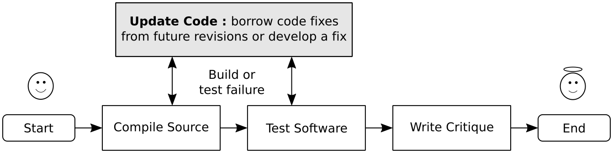

This article describes compilation and testing
of a historical software release of the
SQLite
database engine on a modern hardware and software
platform. The goal is to learn the software engineering
principles that emerge from the issues encountered during
resurrection of a well maintained and widely adopted open
source software. This learning exercise, called software
resurrection, has been introduced in
the REDACTED-FOR-PEER-REVIEW.

Software resurrection exercise begins with
compilation of an old release of a well maintained and widely used
software in a modern hardware and software platform. After
successful compilation, the software's functionality is verified
using automated suite of tests included with the release. Learning
opportunities are provided by failure in compilation and testing
processes. Learners engage with the program code and documentation
to develop a fix for these issues. Finally, the exercise concludes
by writing a critique of the software code and documentation which
provides the opportunity to reflect on the experiences of
compiling and testing the software in a modern
platform.
The SQLite database engine has been selected for
software resurrection because of the following reasons.
Long History
The SQLite software has a long history (of more than 20
years) of being actively developed and maintained. Software
issues related to maintainability of a software show up only
when we look at longer time scales (e.g. a span of 20 years). A software
released only few years ago (e.g. 3 years ago) is most
likely to compile successfully in a modern platform because
the hardware and software dependencies do not introduce
breaking changes in such a short span of time. Therefore,
old releases of SQLite are suitable for the software
resurrection exercise.
Version Controlled History
The SQLite software project maintains a publicly
accessible Version Control System (VCS) history of all
code revisions since 29th May 2000. For example, the VCS
checkout
(or commit) and source
code distribution for sqlite-2.2.1 are publicly
accessible in a online format and are available to
download for offline use as well. Since SQLite has been
actively developed and maintained, its version controlled
history is highly likely to contain a fix for the issues
encountered during software resurrection of
sqlite-2002. If the learner is unable to develop a fix
for an issue, the learner will explore different source
of information (e.g. web search, documentation, etc.) to
obtain a fix. The version control history is also a
possible source of ideas for a fix or may even contain
the fix in a form that is easy to borrow.
Self Contained Tests
The self contained test suite included with the old
releases of SQLite allows us to verify the functionality of
the sqlite software in a modern platform. Such tests are
essential to assure the learner that the fixes applied to
compile the software in a modern platform has not changed the
behaviour of the software.
Familiarity with the Programming Language
SQLite is developed using the C programming language. The
author of this article is familiar with the C programming
language and therefore this software can be resurrected by the
author of this article.
We pursue software resurrection exercise on the sqlite-2.2.1
(VCS
checkout,
source distribution) version
which was released on 9th January 2002 (more than 20 years
ago). We use the keywords sqlite-2002
throughout this article to refer to
sqlite-2.2.1.
This software release version is no longer maintained and
is not recommended for use in production system. However,
this article will show that sqlite-2002 is a valuable
resource for learning and that it may contribute growth in
wisdom of the learner. We use the following hardware and
software environment for software resurrection exercise of
sqlite-2002.
Hardware: A laptop purchased in 2019 with
the following specifications.
Model
Intel(R) Core(TM) i9-9980HK CPU @
2.40GHz
Architecture
x86_64
Byte Order
Little Endian
Address sizes
39 bits physical, 48 bits virtual
CPU(s)
16 (Family: 6, Model: 158, cpu MHz: 800.072)
Threads per code
2
Core per socket
8
Socket
1
Memory
Cache: 16 MB, RAM: 32 GB
Software
Operating System
Debian GNU/Linux 11.3 (bullseye) released on March 26th 2022
Compiler
gcc-10.2.1 (Debian 10.2.1-6) 20210110
In the next section, we begin the
software resurrection process by compiling the sqlite-2002
database engine on a modern hardware and software platform. All
the steps described in this tutorial can be reproduced by
executing a single script as follows.
Patch sqlite-2.2.1 released in 2002 such that it compiles
in a modern hardware and software platform.
mkdir -p $HOME/sr/sqlite/2.2.1/
cd $HOME/sr/sqlite/2.2.1/
wget https://sr.github.io/exercise/sqlite/2.2.1/patches.zip
unzip patches.zip
cd patches
## the apply-patch.sh script does the following
## 1. downloads sqlite-2.2.1 source
## 2. applies patches
## 3. builds sqlite and executes regression tests
./apply-patch.sh $HOME/sr/sqlite/2.2.1/sqlite/